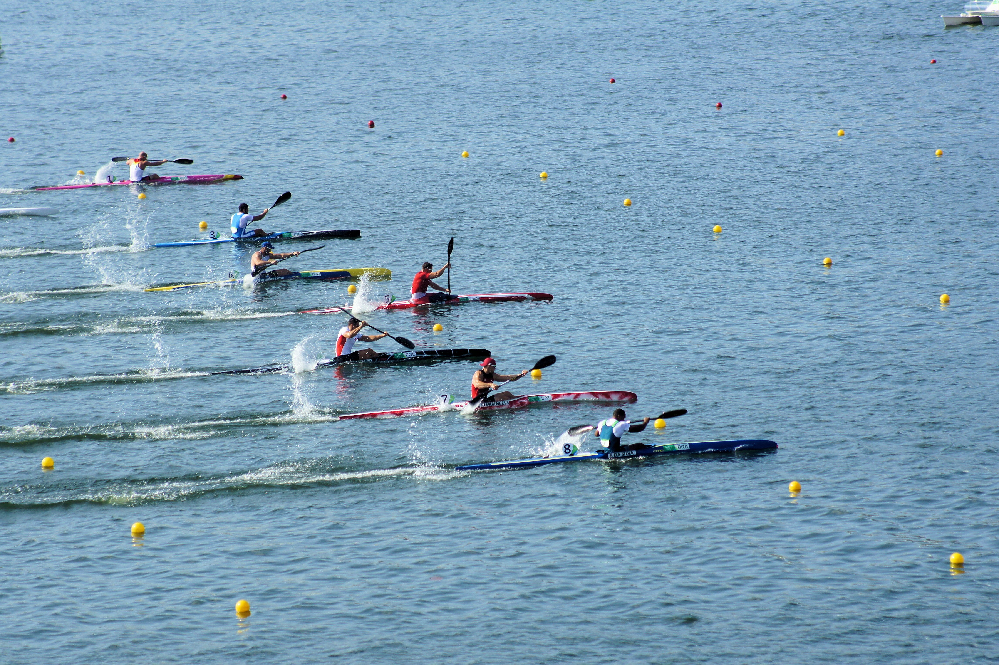

- ¿Qué es?
- Tipos de competición:
- Contrareloj
- Fondo
- Tipos de Piraguas:
- Kayak
- Canoa
¿Que es?
Es la categoría olímpica del Piragüismo, y con más palistas federados en España, se utiliza una embarcación lo más fina posible y se busca la perfección de la técnica para aprovechar más las paladas (El resto de modalidades se inspiran en la modalidad de pista).
Hay dos tipos de competición dentro de esta modalidad:
- Contrareloj
Es una prueba explosiva y de velocidad, se tiene que realizar X distancia en el menor tiempo posible. La prueba se realiza por turnos, puesto que solo hay 9 calles en las cuales solo puede ir una embarcación, los 9 primeros pasarán a final A, en la que se discute el podium y los 9 segundos de la clasificación van a la fina B, para pelear por el máximo de puntos posibles.

Hay dos distancias posibles: 1000m o 500m, (en 2022 se retira la categoría de 200m puesto que desaparece de los juegos olímpicos), 1000 y 500 metros para los hombres, a elegir, y 500m para las mujeres.
Los deportistas solo pueden competir en dos categorías como máximo en el día de la competición, por ejemplo, un deportista se anotó a la categoría K1, K2 y K4, el día de la competición tiene que elegir cual de las 3 que eligió anteriormente no va a participar.
- Fondo
Se usa la misma embarcación que en la Contrareloj, Es una única salida (salen todos los palista a la vez), pueden cojer el rebufo de las embarcaciones que se situen delante, las distancias de esta modalidad son de 2 a 5 km, se realizan pasos por ciaboga obligatorios y se hacen las vueltas necesarias al circuito hasta completar la distancia de la prueba, en esta modalidad, es normar ver algún que otro vuelco, puesto que los piragüistas van pegados unos a otros.

Tipos de Piraguas
Vamos a ver las 2 embarcaciones principales, puesto que hay muchas más variantes como las piraguas Paralímpicas, que hay varios tipos. Las siguientes piraguas que vamos a ver son estas:
- Kayak
Es la embarcación con más licencias federativas que hay hasta la fecha, es una embarcación en la que el deportista va sentado y empujando la embarcación con las piernas, además del uso correcto de la pala, es una embarcación más rápida que la canoa ya que se usan dos hojas en la pala en vez de una. Esta embarcación también tiene timón que se maneja con una cruzeta que se sitúa en el reposapiés.

- Canoa
Esta embarcación, suele ser más fina que el Kayak, ya que el palista va de pie sobre la piragua y va dando paladas de un solo lado, para girar, ajusta la hoja de la pala con la mano que se sitúa en el mango de la pala y usa la pala como "timón."

Kayak
Estas son las embarcaciones en la categoría Kayak:
- K1
- K2

- K4

Canoa
Estas son las embarcaciones en la categoría Canoa:
- C1

- C2

- C4

Página hecha por Alejandro Baños Bouzas, alumno de 2ºSMR